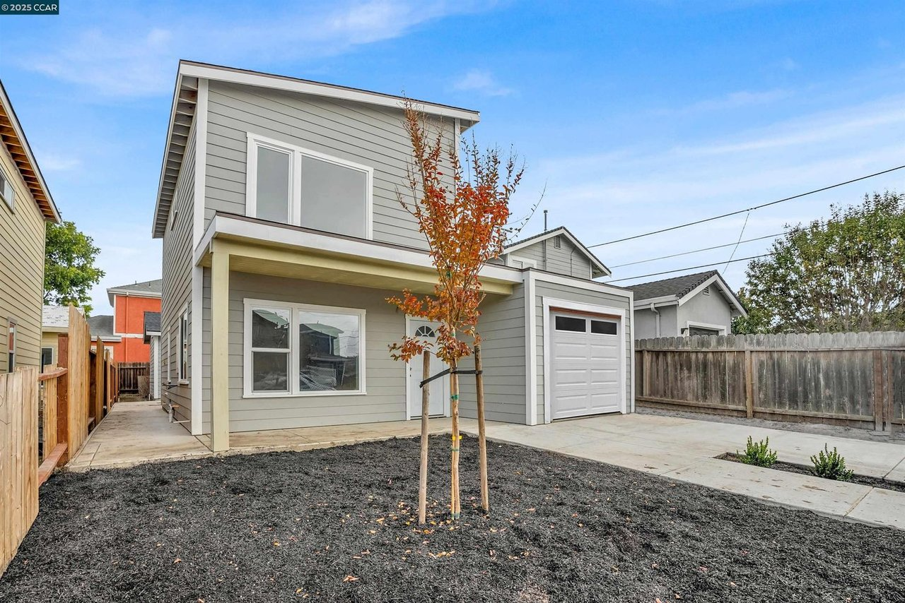
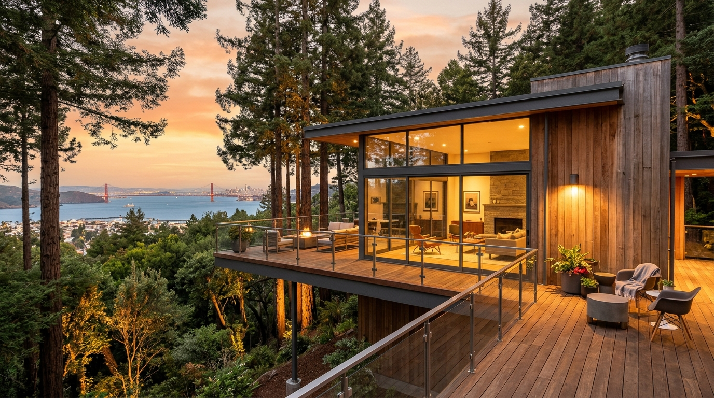

EXPLORE THE NEIGHBORHOODS

Find your corner of San Francisco

PREMIER LUXURY · GOLDEN GATE VIEWS
Pacific Heights →
Billionaires' Row, grand Beaux-Arts and Victorian mansions, Alta Plaza Park, and sweeping north-facing Golden Gate views.
NATIONAL PARK PROXIMITY · TRANQUILITY
Presidio Heights →
Refined residential avenues bordering the historic Presidio national park, distinguished schools, and peaceful private gardens.

WATERFRONT · MARINA GREEN
The Marina & Cow Hollow →
Chestnut and Union Street boutiques, vibrant waterfront dining, Palace of Fine Arts, and Golden Gate promenade strolling.
CABLE CARS · CLASSIC VIEWS
Russian Hill & Nob Hill →
Iconic cable car lines, historic luxury cooperatives, hidden pedestrian stairways, and panoramic Bay Bridge perspectives.